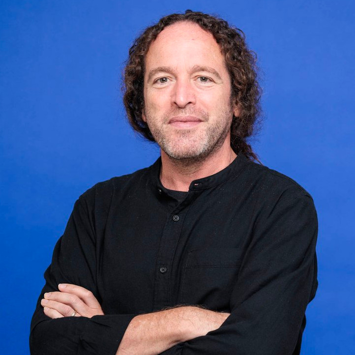
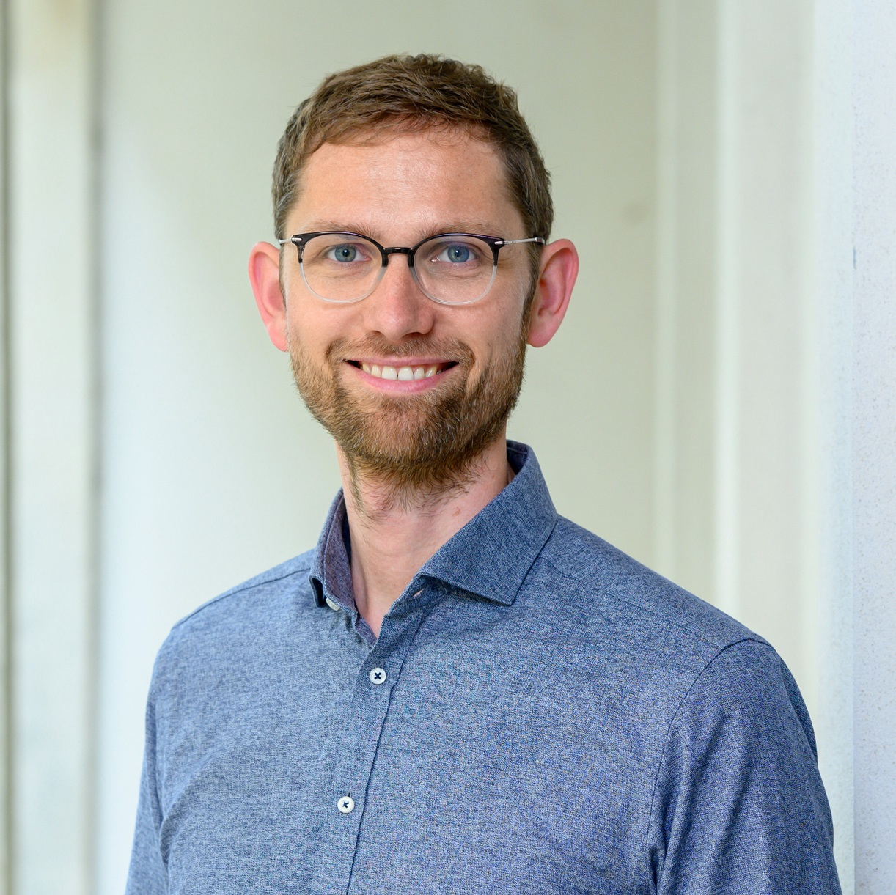

Plenary Lecturers
Listed below are the five plenary lecturers.
Acoustic Ecology of Marine Mammals in the Era of Blue Economy: Navigating Development and Ocean Noise Challenges
Christine Erbe
Centre for Marine Science and Technology, Curtin University, Perth, Australia
Christine is the Director of the Centre for Marine Science and Technology (CMST) at Curtin University in Perth, Australia, and the Director of the Centre of Ocean and Earth Science and Technology (COEST) at Curtin Mauritius. With a background in Physics (M.Sc., Dortmund University) and Geophysics (Ph.D., University of British Columbia), she is studying marine soundscapes, underwater noise generation and propagation, marine bioacoustics, and the effects of noise on animals. She is a Fellow of the Acoustical Society of America, Board member of the International Commission for Acoustics, and member of the intersessional expert group on underwater noise and light pollution of the International Seabed Authority. She chaired the international conference series on the Effects of Noise on Aquatic Life for several years. She has worked on both ANSI and ISO working groups on underwater noise and on the scientific committee to assess operations in Antarctica for the German Environmental Protection Agency.

The Past Has Ears at Notre-Dame: Acoustic Research at the Intersection of Virtual Reality, Cultural Heritage, and Experimental Archaeology
Brian F.G. Katz
Sorbonne Université, France
Brian F.G. Katz is a CNRS Research Director at the Sorbonne Université, Institut Jean Le Rond d'Alembert, in the group Lutheries–Acoustics–Music, where he leads the Sound Spaces research team. His fields of interest include spatial 3-D audio rendering and perception, room acoustics, Human-Computer Interface, virtual/mixed reality, and archaeoacoustics. With a background in physics and philosophy, he obtained his M.Sc. in Applied Physics at the University of Sussex in 1992, his Ph.D. in Acoustics from Penn State in 1998, and his Habilitation à Diriger des Recherches (HDR) in engineering sciences from the Université Pierre et Marie Curie (UPMC) in 2011. Before joining CNRS, he worked for various acoustical consulting firms, including Artec Consultants Inc., ARUP & Partners, and Kahle Acoustics. He has also worked at the Laboratoire d'Acoustique Musical (UPMC), IRCAM, and LIMSI-CNRS. He is a fellow of the Acoustical Society of America, associate editor with JASA and several other journals, and a regular reviewer for multiple scientific journals.

Acoustics and Wave Physics in Modern Applications of Ultrasound in Therapy
Oleg A. Sapozhnikov
Moscow State University, Russia
University of Washington, USA
Oleg A. Sapozhnikov received his M.S. degree in physics and his Ph.D. and D.Sc. degrees in acoustics from Moscow State University (MSU), Moscow, Russia, in 1985, 1988, and 2008, respectively. He is currently a Professor in the Department of Acoustics, Physics Faculty, MSU. Since 1996 he has also worked at the Applied Physics Laboratory, Center for Industrial and Medical Ultrasound, University of Washington, Seattle, WA, USA. His research interests are physical acoustics, nonlinear wave phenomena, medical ultrasound, including shock wave lithotripsy, high-intensity focused ultrasound, and ultrasound-based imaging. He has been a member of the Board of the International Congress on Ultrasonics since 2009, the Head of the Physical Ultrasound Division of the Scientific Council on Acoustics of the Russian Academy of Sciences since 2009, and a Fellow of the Acoustical Society of America. Dr. Sapozhnikov is one of the first recipients of the Early Career Award of the International Commission for Acoustics (2004).

Inclusive Speech Technology: Developing Automatic Speech Recognition for Everyone
Odette Scharenborg
Delft University of Technology, the Netherlands
Odette Scharenborg is an Associate Professor in the Department of Intelligent Systems, Delft University of Technology, the Netherlands. She is an interdisciplinary researcher on human and automatic speech processing. Her current research focuses on developing inclusive speech technology, i.e., speech technology that works for everyone irrespective of how they speak or the language they speak. Her main interests are automatic speech recognition of diverse types of speech, including child, accented, and pathological speech, and quantifying and mitigating bias in automatic speech recognition. Dr. Scharenborg is the President of the International Speech Communication Association (ISCA). She has served on the ISCA board since 2017, and as Vice President during 2021-2023. During 2018-2022 she was a member of the IEEE SPS Speech and Language Processing Technical Committee, and during 2019-2023 a (Senior) Associate Editor of IEEE Signal Processing Letters. She will be the General Chair of Interspeech Rotterdam, the Netherlands, 2025.

Selective Listening in Music: From Psychoacoustical Principles to Hearing Device Evaluation
Kai Siedenburg
Institute of Signal Processing and Speech Communication, Graz University of Technology, Austria
Kai Siedenburg is Professor of Communication Acoustics at the Institute of Signal Processing and Speech Communication at Graz University of Technology. He studied mathematics and musicology in Berlin, Berkeley, and Vienna. In 2016, he obtained a PhD in Music Technology with specialization in music perception and cognition from McGill University in Montreal. He then was a Marie Skłodowska-Curie fellow at Carl von Ossietzky Universität Oldenburg and since 2020 directs the Oldenburg Music Perception and Processing Lab as a Freigeist fellow of the Volkswagen Foundation. Since 2022, he has been a principal investigator in the DFG Collaborative Research Centre “Hearing Acoustics.” Kai is co-editor of the 2019 Springer Handbook of Auditory Research volume on “Timbre: Acoustics, Perception, and Cognition” and since 2023 associate editor of The Journal of the Acoustical Society of America (Musical Acoustics section). His research interests revolve around music psychoacoustics, auditory scene analysis, and music and hearing health.